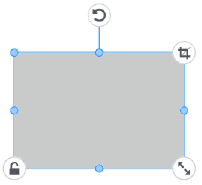

이미지 및 문자 조작 |
선택한다
이미지 또는 문자를 클릭(또는 탭)합니다.
선택하면 주위에 편집점이 나타납니다.
이동, 변형, 회전
 「컬러 인쇄 전용 Template」/「커팅 전용 Template」의 경우
「컬러 인쇄 전용 Template」/「커팅 전용 Template」의 경우

「타각 전용 Template」/「포일 인쇄 전용 Template」의 경우

 |
: 이동시킵니다 |
| 이동하는 다른 오브젝트의 상하좌우에 바싹 붙어 배치되도록 위치가 자동 조정됩니다. 오브젝트가 바싹 붙어 배치되는 것은 동일한(예: 위와 위) 가장자리입니다. 자유롭게 배치하고 싶으면 「가이드라인」을 OFF로 합니다. |
|
 |
: 모양을 바꿉니다 |
 |
: 회전합니다 |
 |
: 가로세로비를 유지한 채로 사이즈를 크게 하거나 작게 합니다 |
 |
: 위치나 사이즈를 바꾸고 싶지 않으면 ON으로 합니다 |
| : 불필요한 부분을 감추어 인쇄하고 싶은 이미지로 만듭니다(이미지일 때만 표시) ON으로 하면 이미지 주위에 트림용 편집점이 표시됩니다
|
|
 |
: 이미지 밝기 등의 조정이나 윤곽선 관련 설정을 합니다(타각 전용 Template, 포일 인쇄 전용 Template일 때 표시) |